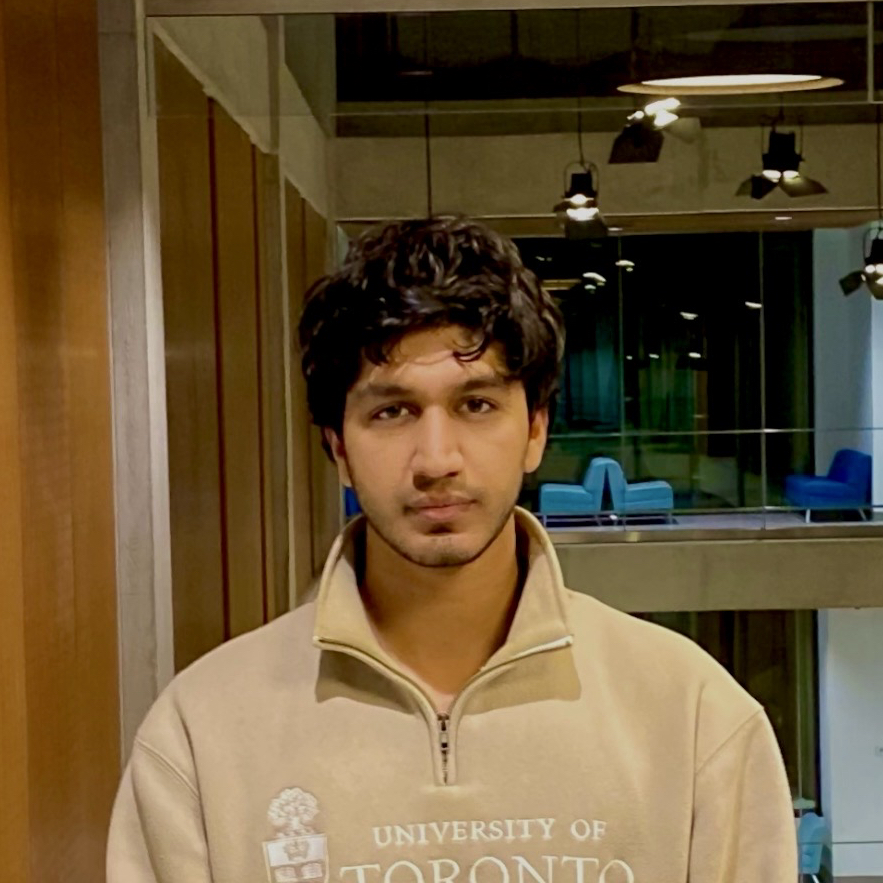

Muhammad Hamza

I’m a Member of Technical Staff at Rootly (YC S21) AI Labs, where we are building open-source tools, prototypes, and research to advance reliability engineering.
I’m currently a student researcher under Dr. Mengyu Wang at the Harvard AI and Robotics Lab, exploring egocentric multimodal datasets, VLM benchmarking and supervised fine-tuning, and a bit of multimodal spatial reasoning.
I’m researching generalization, sim-to-real transfer, and self-supervised learning in robotic reinforcement learning at the University of Toronto’s Medical Computer Vision and Robotics Lab, working under Amey Pore and Lueder Alexander Kahrs.
Currently I’m taking a break from school to focus on research and work on my own projects!